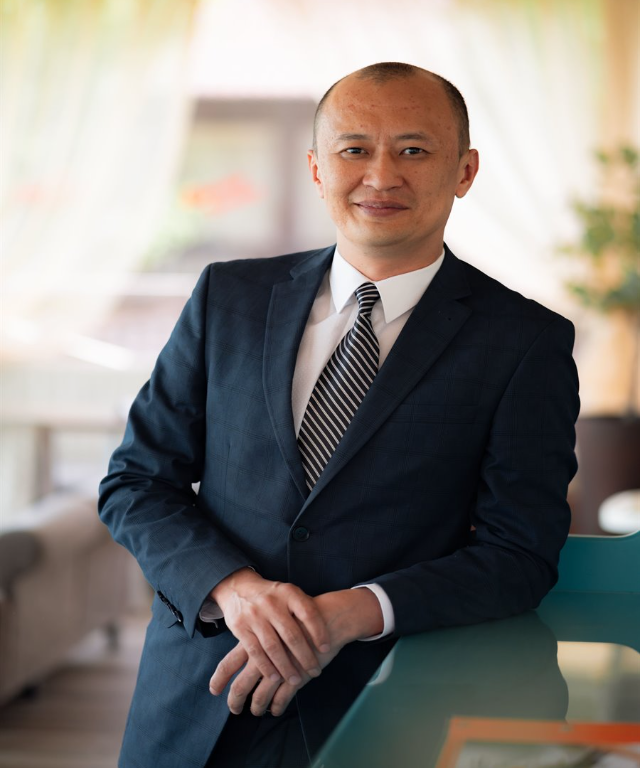

IKurabayev.kz / QR
Home
Iskander Kurabayev
Electrical engineering researcher, energy-efficiency specialist, applied measurement engineer, PhD, and accredited energy auditor in Kazakhstan.
Искандер Курабаев — исследователь в области электротехники, специалист по энергоэффективности и инженер прикладных измерений из Казахстана.
PhD
Energy auditor
Research
AI Lab
Selected works available on profile page
ORCID / Scopus / DOI-linked works
Contact route pending approval